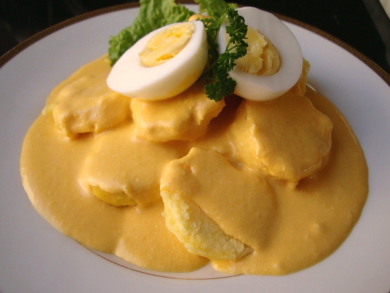

Papa a la Huancaina

"Somos pas peruanos que la papa"
Papa a la Huancaina is one of the most peruvian dishes right next to the Ceviche.
The dish was originally served at the railway stations between Lima and Huancayo,
sold to passengers as a light food consisting of potatoes bathed in a delicious cheese and pepper sauce.
From that came the name “potatoes that you eat in route to Hauncayo” which would later be changed to
Papa a la Huancaina.
Ingredients
- 6 boiled potatoes of your choice
- 340 grams of queso fresco (cubed)
- 1/2 a pack of unsalted saltine crackers
- 2 cups of milk
- Salt
- 1 cup of vegetable oil
- 1/2 a red onion (diced)
- 4 aji amarillo peppers
- 1 lime
- 1 teaspoon of badia yellow coloring
- 4 boiled eggs
Recipe Instructions
- Add a teaspoon of your oil and pan fry onion until browned then put onion in blender.
- Add your queso, saltines, milk, aji amarillo peppers, yellow coloring, and oil to the blender
- Blend until you have a creamy sauce.
- Add salt to taste.
- Blend again for a couple of minutes.
- Pour into large bowl, cover bowl and put in the refrigator for 20 minutes to thiccen.
- Take bowl out and squeeze 1 lime into sauce.
- Mix sauce to smooth it out.
- Cover bowl then put back in the refrigator for 30 minutes.
- Take sauce out and mix it.
- Slice potatoes, plate them, and pour the huancaina sauce over them.
- Cut your boiled eggs in half, put them over the sauce, and serve.
Return to top
Return to main page